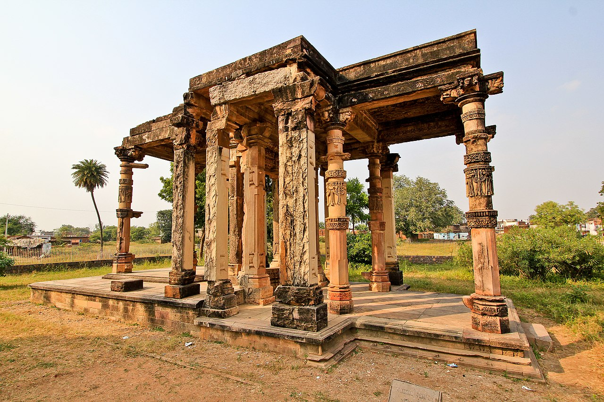
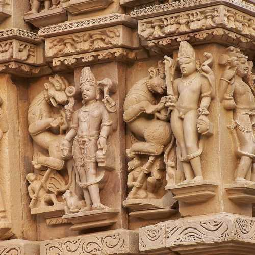
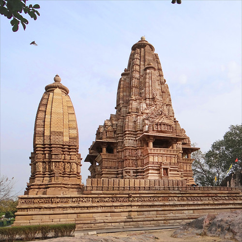
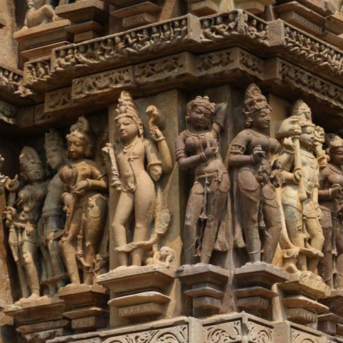

The Khajuraho group of monuments was built during the rule of the Chandela dynasty. The building activity started almost immediately after the rise of their power, throughout their kingdom to be later known as Bundelkhand. Most temples were built during the reigns of the Hindu kings Yashovarman and Dhanga. Yashovarman's legacy is best exhibited by the Lakshmana Temple. Vishvanatha temple best highlights King Dhanga's reign.The largest and currently most famous surviving temple is Kandariya Mahadeva built in the reign of King Vidyadhara. The temple inscriptions suggest many of the currently surviving temples were complete between 970 and 1030 AD, with further temples completed during the following decades.
The first documented mention of Khajuraho was made in 641 by Xuanzang, a Chinese pilgrim who described encountering several dozen inactive Buddhist monasteries and a dozen Hindu temples with a thousand worshipping brahmins. In 1022 CE, Khajuraho was mentioned by Abu Rihan-al-Biruni, the Persian historian who accompanied Mahmud of Ghazni in his raid of Kalinjar; he mentions Khajuraho as the capital of Jajahuti. The raid was unsuccessful, and a peace accord was reached when the Hindu king agreed to pay a ransom to Mahmud of Ghazni to end the attack and leave.

Until the 12th century, Khajuraho was under Hindu kings and featured 85 temples. Central India was seized by Delhi Sultanate in the 13th century. Under Muslim rule, many temples were destroyed and the rest left in neglect. Ruins of some old temples (Ghantai temple above) are still visible.
The name Khajuraho, or Kharjuravāhaka, is derived from ancient Sanskrit (kharjura, खर्जूर means date palm,[27] and vāhaka, वाहक means "one who carries" or bearer[28]). Local legends state that the temples had two golden date-palm trees as their gate (missing when they were rediscovered). Desai states that Kharjuravāhaka also means scorpion bearer, which is another symbolic name for deity Shiva (who wears snakes and scorpion garlands in his fierce form)
Cunningham's nomenclature and systematic documentation work in 1850s and 1860s have been widely adopted and continue to be in use.[26] He grouped the temples into the Western group around Lakshmana, Eastern group around Javeri, and Southern group around Duladeva.
The central Indian region, where Khajuraho temples are, was controlled by various Muslim dynasties from the 13th century through the 18th century. In this period, some temples were desecrated, followed by a long period when they were left in neglect.[9][12] In 1495 CE, for example, Sikandar Lodi's campaign of temple destruction included Khajuraho.[22] The remoteness and isolation of Khajuraho protected the Hindu and Jain temples from continued destruction by Muslims.[23][24] Over the centuries, vegetation and forests overgrew the temples

The Khajuraho temples feature a variety of artwork, of which 10% is sexual or erotic art outside and inside the temples. Some of the temples that have two layers of walls have small erotic carvings on the outside of the inner wall. Some scholars suggest these to be tantric sexual practices.[58] Other scholars state that the erotic arts are part of the Hindu tradition of treating kama as an essential and proper part of human life, and its symbolic or explicit display is common in Hindu temples.[6][59] James McConnachie, in his history of the Kamasutra, describes the sexual-themed Khajuraho sculptures as "the apogee of erotic art":The Khajuraho temples feature a variety of artwork, of which 10% is sexual or erotic art outside and inside the temples. Some of the temples that have two layers of walls have small erotic carvings on the outside of the inner wall. Some scholars suggest these to be tantric sexual practices.


The Khajuraho temples feature a variety of artwork, of which 10% is sexual or erotic art outside and inside the temples. Some of the temples that have two layers of walls have small erotic carvings on the outside of the inner wall. Some scholars suggest these to be tantric sexual practices.[58] Other scholars state that the erotic arts are part of the Hindu tradition of treating kama as an essential and proper part of human life, and its symbolic or explicit display is common in Hindu temples.[6][59] James McConnachie, in his history of the Kamasutra, describes the sexual-themed Khajuraho sculptures as "the apogee of erotic art":